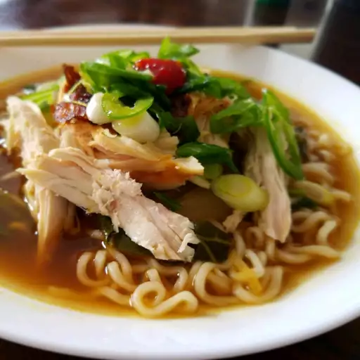

Chicken Ramen Bowl

Description
The holiday hoopla is over and I'm setting my sights on eating whole. Ramen has been all the rage and I've been dying to try this at home. I never skimp on flavor even when I'm eating light. This dish is a total flavor bomb, filled with a rich broth, tender meat, and noodles, topped with a 7-minute egg – my new favorite thing in the world. My family went nuts for this; it's complex, easy, and satisfying. You don't have to make the egg, but I think it's so worth it.
Ingredients
- 1 medium onion, thinly sliced
- 3 cloves garlic, minced
- 1 tablespoon freshly grated ginger
- ½ cup rice vinegar, or to taste
- ½ cup reduced-sodium soy sauce
- 2 tablespoons oyster sauce
- 2 tablespoons mirin
- 1 tablespoon fish sauce
- 1 tablespoon sriracha sauce
- 4 cups low-sodium chicken broth
- 1 cup water
- 1 cooked chicken breasts, shredded
- ¾ pound baby bok choy, quartered lengthwise
- 3 (3 ounce) packages dried ramen noodles
- 1 tablespoon vegetable oil
- 4 eggs
- 1 jalapeno pepper, sliced, or to taste
- 2 green onions, chopped, or to taste
- ¼ cup chopped cilantro, or to taste
Steps
- Heat a Dutch oven over medium-high heat. Add onion and saute until starting to soften, about 5 minutes. Add garlic and ginger; cook about 30 seconds more. Add rice vinegar, soy sauce, oyster sauce, mirin, fish sauce, and sriracha sauce; stir to combine. Add chicken broth and water and bring to a boil. Reduce heat and simmer about 5 minutes. Add chicken and bok choy; simmer gently until bok choy is just tender, about 2 minutes.
- Fill a large pot with lightly salted water and bring to a rolling boil. Add ramen noodles and return to a boil. Cook, uncovered, stirring occasionally, until noodles are tender yet firm to the bite, 5 to 7 minutes. Drain and drizzle with vegetable oil to prevent sticking.
- While ramen is cooking, fill a pot with enough water to cover the eggs and bring to a boil. Gently lower eggs into the boiling water and cook until yolks are barely set, about 7 minutes.
- Fill a large bowl with ice water. Transfer soft boiled eggs to the ice bath to stop the cooking process; let sit about 3 minutes. Drain eggs, carefully peel away shells, and slice in half.
- Divide ramen between 4 bowls. Add broth. Top each with jalapeno, green onions, cilantro, and soft boiled egg. Serve immediately.